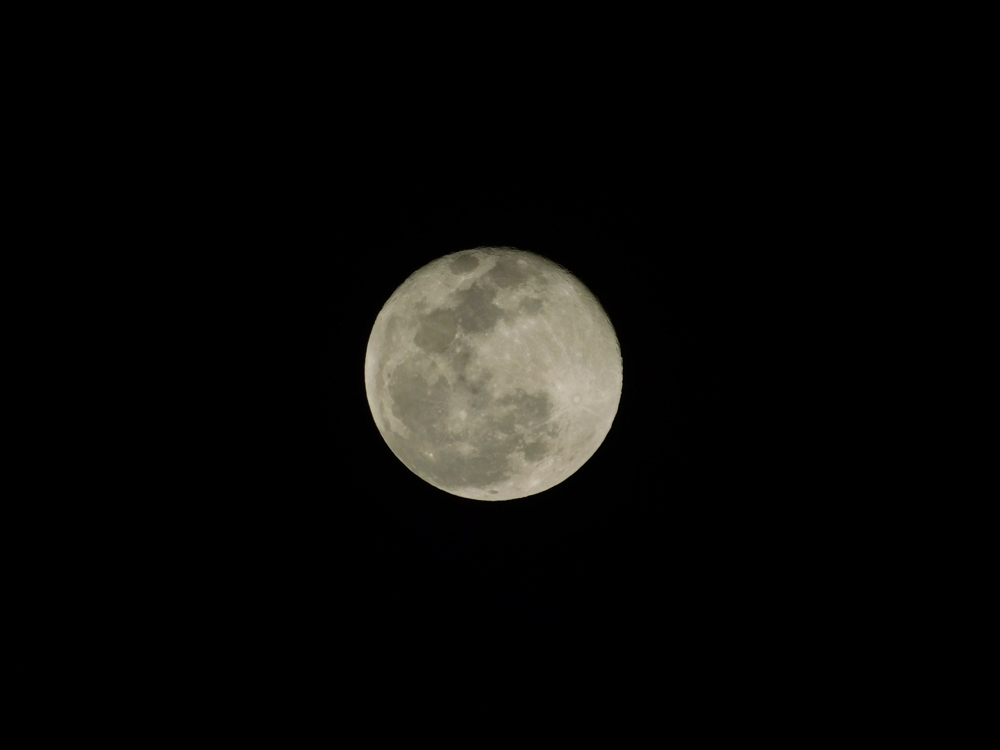
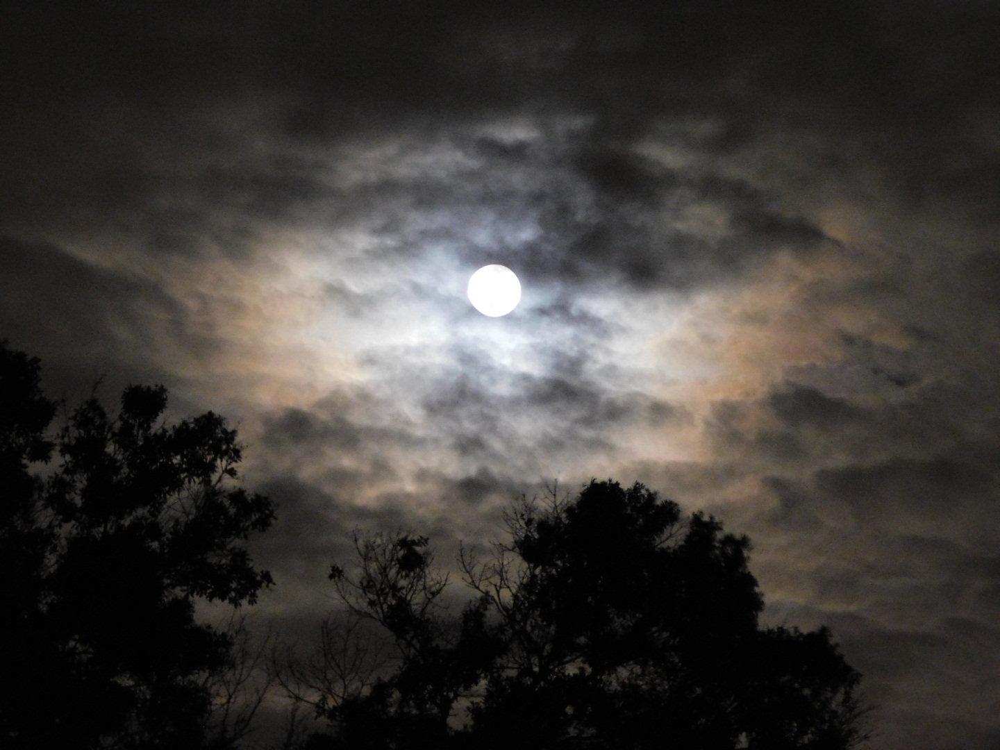

Moon Shoot
The Moon is a beautiful thing. I have always found it to be inspiring.
I started by taking some bad pictures during an eclipse, then started to regularly take full moon shots.

Beautiful Full Moon, Florida

Omnious Full Moon, Florida